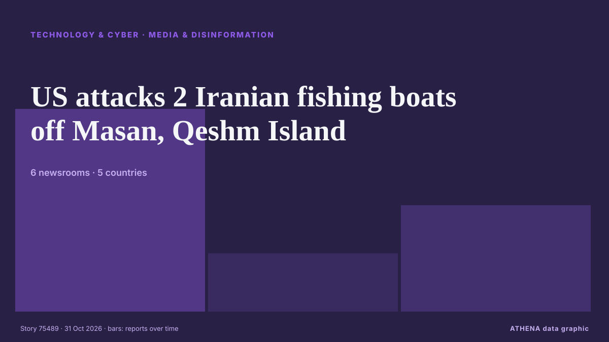

Medien und Desinformation
| 18. Okt. | 0 |
|---|---|
| 19. Okt. | 0 |
| 20. Okt. | 0 |
| 21. Okt. | 1 |
| 22. Okt. | 0 |
| 23. Okt. | 0 |
| 24. Okt. | 1 |
| 25. Okt. | 0 |
| 26. Okt. | 0 |
| 27. Okt. | 2 |
| 28. Okt. | 4 |
| 29. Okt. | 2 |
| 30. Okt. | 3 |
| 31. Okt. | 2 |
Schlagzeilen werden auf Englisch angezeigt, wie veröffentlicht.

US attacks 2 Iranian fishing boats off Masan, Qeshm Island
Iranian state broadcaster IRIB, citing a Hormozgan province official, said on Saturday that the US attacked two fishing boats near Qeshm Island, leaving two fishermen missing and one wounded. von Business Recorder
Far-right activist Tommy Robinson found guilty of harassing journalists
Tommy Robinson was charged with two counts of harassment causing fear of violence, relating to messages and calls to two Daily Mail journalists in 2024. von ABC News Australia
RTS CEO Manja Grcic resigns
Serbian public broadcaster (RTS) CEO Manja Grcic has resigned, N1 was told by sources at the state TV. von N1 Serbia (English)
Front and Back Pages
Lae’s Front and Back Page – Tuesday October 27, 2026. von Post-Courier (PNG)
Niger journalist Kaka ‘forcibly disappeared’: HRW
Human Rights Watch has reported the disappearance of Nigerien journalist Moussa Kaka, urging the ruling junta to disclose his location amid concerns over press freedom following the 2023 coup. von Arab News
Nigel Farage mocked for rows of empty seats at pre-Budget speech in London
The Reform leader blamed ‘staff incompetence’ for the low turnout. von Evening Standard (London)
Rights groups slam Egypt's Mada Masr closure, back Lina Attalah
International rights groups have condemned the closure of Egypt's Mada Masr outlet and conviction of its editor Lina Attalah amid a wider press crackdown. von The New Arab
Tunisian journalist sentenced to four years in jail on terrorism charges
International journalism organisations have condemned Zied el-Heni's conviction on terrorism offenses saying its an escalation of Tunisia's assault on the press. von Africanews (English)
2027: FG’s awardee, Usoro warns against fake news, deepfakes
By Emma Ujah, Abuja Bureau Chief The Federal Government yesterday gave the Executive Chairman of Miden Systems Limited, Dr. von Vanguard
Writer, journalist Rimants Ziedonis passes away
The writer and journalist Rimants Ziedonis (1962–2026) has passed away, his daughter Evelīna Ziedone announced on social media. von LSM English